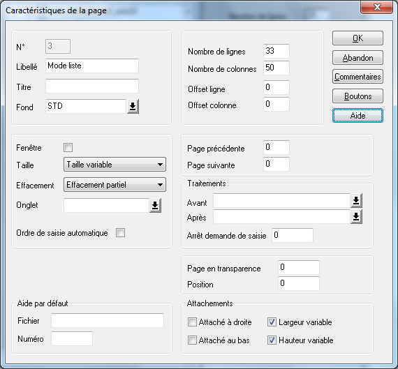

Le mode liste permet notamment à l'utilisateur de consulter, modifier, créer les éléments de la table sous forme de liste.
Page 3 : Facultative (si le zoom ne propose pas de mode liste).
Type de page : Page avec effacement partiel.
Offsets ligne et colonne : 0.
Particularités :
En cas de mode d'affichage non mixte, la taille de la page du mode liste doit être égale à celle des pages de la fiche.
La page doit contenir :
Éventuellement les données qui permettront à l'utilisateur de spécifier un filtre "de premier niveau". Si ces données existent, elles doivent être en saisie. Remarquez que la constitution du filtre proprement dite est à programmer dans la procédure de traitement ZoomApresCle.
Éventuellement le champ Zoom.Search pour effectuer une recherche via le Power Search, avec en nom d'objet "_SEARCH". Si l'utilisateur n'a pas accès à la fonctionnalité, le champ sera masqué.
Un objet tableau avec les données du mode liste :
Le tableau sera associé au point d'arrêt numéro 3.
Il s'appellera obligatoirement Zoom.
Si l'on veut autoriser la sélection multiple des lignes du tableau, il faut associer au tableau une donnée de contrôle des lignes. Pour ce faire :
Déclarez, dans la liste des enregistrements du masque, l'enregistrement RowInfo du dictionnaire ddsys.dhsd, avec obligatoirement le nom d'instance ZoomSelection.
Dans les propriétés du tableau, positionnez le champ "Avec donnée de contrôle" à "Oui" et sélectionnez la donnée RowInfo de l'enregistrement ZoomSelection dans le champ "Donnée de contrôle".
Vous pouvez autoriser ou interdire la modification et la création d'éléments de la table en mode liste :
Pour interdire toute modification, il suffit de déclarer toutes les données dans l'objet tableau en affichage.
Sinon, déclarez les données modifiables (et uniquement celles-ci) en saisie.
Attention : Il est interdit de ressaisir les champs constituant l'index principal (ceux saisis en page 2), que ce soit en création ou en modification. Si vous faites figurer ces champs dans le tableau, déclarez-les en affichage et non en saisie.
Remarque : Toute modification d'une donnée faisant l’objet d’un tri est susceptible de bouleverser l'ordre d'affichage des lignes du tableau. Dans ce cas, l'utilisateur devra rafraîchir l'écran par la touche "F10".
Attributs dynamiques : Si vous affectez le nom d'objet "ZoomCache" ou "ZoomIllisible" à un objet placé dans la page du mode liste, celui-ci sera automatiquement caché ou rendu illisible.
Si vous souhaitez que la taille du tableau s'adapte au changement de taille de la fenêtre, il faudra :
En mode non mixte : Cocher les cases "Largeur variable" et/ou "Hauteur variable" (en général, on cochera les deux cases, de manière à étendre le tableau à la fois en largeur et en hauteur), pour la page du mode liste et pour chaque page du mode fiche.
En mode mixte :
Si le tableau est extensible en largeur, cocher la case "Largeur Variable" pour la page du mode liste et la case "Attaché à droite" pour chaque page du mode fiche.
Si le tableau est extensible en hauteur, cocher les cases "Hauteur variable" pour la page du mode liste et pour chaque page du mode fiche.
Exemple :
